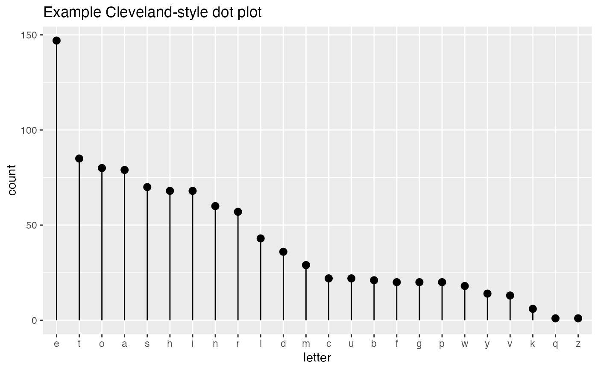

Plot counts of a categorical variable.
ClevelandDotPlot(frm, xvar, title, ..., sort = -1, limit_n = NULL, stem = TRUE)
Arguments
| frm | data frame to get values from |
|---|---|
| xvar | name of the independent (input or model) column in frame |
| title | title to place on plot |
| ... | no unnamed argument, added to force named binding of later arguments. |
| sort | if TRUE sort data |
| limit_n | if not NULL number of items to plot |
| stem | if TRUE add stems/whiskers to plot |
Details
Assumes that xvar is a factor or can be coerced to one (character or integral).
sort < 0 sorts the factor levels in decreasing order (most frequent level first)
sort > 0 sorts the factor levels in increasing order (good when used in conjunction with coord_flip())
sort = 0 leaves the factor levels in "natural order" -- usually alphabetical
stem = FALSE will plot only the dots, without the stem to the y=0 line.
limit_n = NULL plots all the levels, N an integer limits to the top N most populous levels
Examples
set.seed(34903490) # discrete variable: letters of the alphabet # frequencies of letters in English # source: http://en.algoritmy.net/article/40379/Letter-frequency-English letterFreqs = c(8.167, 1.492, 2.782, 4.253, 12.702, 2.228, 2.015, 6.094, 6.966, 0.153, 0.772, 4.025, 2.406, 6.749, 7.507, 1.929, 0.095, 5.987, 6.327, 9.056, 2.758, 0.978, 2.360, 0.150, 1.974, 0.074) letterFreqs = letterFreqs/100 letterFrame = data.frame(letter = letters, freq=letterFreqs) # now let's generate letters according to their letter frequencies N = 1000 randomDraws = data.frame(draw=1:N, letter=sample(letterFrame$letter, size=N, replace=TRUE, prob=letterFrame$freq)) WVPlots::ClevelandDotPlot(randomDraws, "letter", title = "Example Cleveland-style dot plot")# Note the use of sort = 0, and that the graph correctly includes counts # with no occurrences (5, and 7) WVPlots::ClevelandDotPlot(mtcars, "carb", sort = 0, "Example of counting integer values")